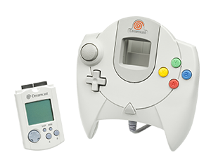
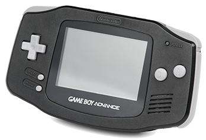
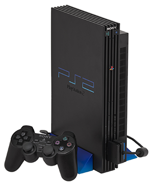
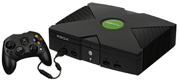
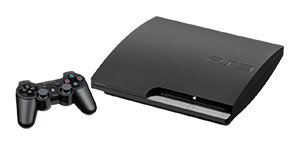
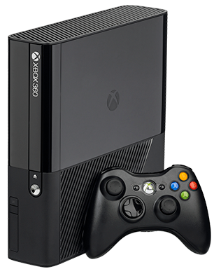
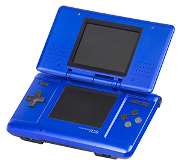

De zesde generatie begon in 1998 toen de Dreamcast op de markt kwam. Kenmerkend was de 128-bits en de controllers zonder beweging (zie de zevende generatie). Bekende consoles waren onder andere de Playstation 2, de Xbox en de Nintendo Gamecube. In 2013 werd de Playstation 2 van de markt gehaald, wat het einde betekende van de zesde generatie.
Dreamcast is een spelcomputer geproduceerd door Sega. Deze werd uitgebracht op 27 november 1998 in Japan. In de Verenigde Staten en Europa werd het later uitgebracht. Op 9 september 1999 in de Verenigde Staten en op 14 oktober 1999 in Europa. De Dreamcast was de eerste in de zesde generatie van spelcomputers, voorafgaand aan PlayStation 2 en Xbox en is tot op heden hun laatst geproduceerde spelcomputer voor de thuismarkt. De productie stopte uiteindelijk op 31 maart 2001 wegens tegenvallende verkoop. Er zijn wereldwijd 10,6 miljoen Dreamcast-exemplaren verkocht. Na het stopzetten van de productie ontstond er een illegale kloon van de Dreamcast, die onder de naam Treamcast korte tijd werd verkocht maar dit werd in korte tijd stopgezet.

De Game Boy Advance is een draagbare spelcomputer geproduceerd door Nintendo. Deze werd uitgebracht op 21 maart 2001 in Japan en 3 maanden later in de Verenigde Staten en Europa. De Game Boy Advance is de opvolger van de Game Boy Color. Het was de eerste draagbare spelcomputer met een 32 bits-processor. In 2003 werd de vernieuwde versie op de markt gebracht. Dit werd dan de Game Boy Advance SP genoemd. 2 jaar later werd dan de verkleinde versie, de Game Boy Micro geïntroduceerd door Nintendo.

De PlayStation 2 is een spelcomputer van Sony Computer Entertainment, die op 4 maart 2000 werd uitgebracht in Japan, in de Verenigde Staten op 26 oktober 2000 en in Europa op 24 november 2000, als opvolger van de eerste PlayStation. Sinds 2004 is er een slimline-versie van de PlayStation 2 op de markt. Deze versie is slechts 2,5 cm dik en heeft geen cd-lade meer. Op 2 november 2007 maakte Sony bekend een vernieuwde slimline-PlayStation 2 uit te gaan brengen. Het nieuwe model is nog kleiner dan de slimline-PlayStation 2 en heeft een interne voeding.Op 28 december 2012 stopte Sony na bijna 13 jaar met de productie van de PlayStation 2 in Japan. In 2006 werd de PS2 opgevolgd door de PlayStation 3. Ondanks dat bleef de PlayStation 2 nog ongekend populair en volop in productie. De PlayStation 2 was lange tijd de best verkochte spelcomputer wereldwijd, waarvan er ruim 150 miljoen exemplaren in productietijd zijn verkocht. Er zijn ruim 3800 speltitels uitgebracht die 1,5 miljard keer werden verkocht.

De Xbox is een spelcomputer van Microsoft. Hij werd op 15 november 2001 uitgebracht in Noord-Amerika, op 22 februari 2002 in Japan en op 14 maart 2002 werd de Europese markt betreden. De naam Xbox stamt af van "DirectX Box", een van de codenamen tijdens de ontwikkeling van de spelcomputer, dat door de ontwikkelaars in interne e-mails al snel werd afgekort tot Xbox. De Xbox is een veelzijdig apparaat. Naast het spelen van computerspellen kan met het apparaat dvd's worden bekeken en op de ingebouwde harde schijf muziek worden opgeslagen. Door middel van een beveiliging zal het apparaat alleen programmatuur uitvoeren die door Microsoft digitaal ondertekend is en heeft Microsoft een absolute controle over welke programmacode het apparaat precies uitvoert. Dit veranderde toen hackers probeerden onder andere Linux uit te voeren op de Xbox. Tegenwoordig hoeft de Xbox niet eens opengemaakt te worden om te worden omgebouwd.

De zevende generatie begon in 2005 toen de Xbox 360 op de markt kwam. Kenmerkend voor deze generatie waren de eerste spellen die met behulp van beweging van uw controllers konden worden gespeeld. Bekende consoles waren onder andere de Xbox 360, de Playstation 3 en de Nintendo Wii. In 2017 werd de Nintendo Wii van de markt gehaald, wat het einde betekende van deze generatie.

De PlayStation is een spelcomputer en de derde console in de PlayStation-serie van Sony Computer Entertainment. De console werd gepresenteerd op 16 mei 2005 tijdens de E3-conferentie in Los Angeles. Het is de opvolger van de PlayStation 2 en de voorloper van de PlayStation 4. De lancering van de PlayStation 3 was op 11 november 2006 in Japan , op 17 november 2006 in Noord-Amerika en op 23 maart 2007 in Europa, Rusland, Midden-Oosten en Australië. De lancering in de PAL-gebieden werd uitgesteld, omdat er vertraging was bij de massaproductie van een component van de blu-rayspeler.De console nam het vooral op tegen Microsofts Xbox 360 en Nintendo's Wii. Deze horen samen tot de zogenaamde zevende generatie van spelcomputers. In december 2015 waren er wereldwijd 86 miljoen consoles verkocht. Na de geruchten dat er een 'Slim'-model in productie was, kondigde Sony op 18 augustus 2009 tijdens een persconferentie op Gamescom officieel de PlayStation 3 Slim aan. Tijdens de persconferentie van Sony op 19 september 2012 kondigde Sony de al verwachte opvolger van de Slim aan, de Super Slim.

De Xbox 360 is een spelcomputer geproduceerd door Microsoft en ontwikkeld door een samenwerkingsverband van IBM, ATI, Samsung en SiS. De Xbox 360 is de opvolger van de Xbox en concurreert met Sony's PlayStation 3 en Nintendo's Wii, beide spelcomputers van de zevende generatie. De Xbox 360 werd op 12 mei 2005 officieel onthuld op MTV, met een gedetailleerde introductie en spelinformatie op E3. Het apparaat raakte tijdens de introductie op slag uitverkocht en er waren in december 2011 wereldwijd reeds 57 miljoen exemplaren verkocht. De naam 360 slaat op het aantal graden in een cirkel, wat de oneindigheid van de Xbox moet voorstellen. De aan-en-uitknop is met opzet groot gemaakt, omdat deze ook een cirkel is. Het design is kleiner gemaakt dan bij de eerste Xbox. Hierdoor is wel de voeding buiten de console gebracht. De standaardconsole heeft een witte kleur met groene tinten. De voorkantjes kunnen worden verwisseld, met het idee om iedereen een unieke Xbox 360 te laten hebben.

De Nintendo DS is een draagbare spelcomputer van het Japanse bedrijf Nintendo. De spelcomputer is later opgevolgd door de Nintendo DS Lite. Hoewel de Nintendo DS eerder uitkwam dan de Game Boy Micro, kan deze vanwege de gebruikte technologie toch gezien worden als een nieuwere generatie spelcomputer. "DS" staat formeel voor dual screen (vertaling: twee schermen), omdat het apparaat twee schermen heeft. De twee schermen zijn een erfenis van de oudere Game & Watch-serie. De Nintendo DS werd in 2012 de best verkochte spelcomputer wereldwijd, en nam de titel over van de PlayStation 2. Er zijn in totaal ruim 159 miljoen exemplaren van de DS verkocht.